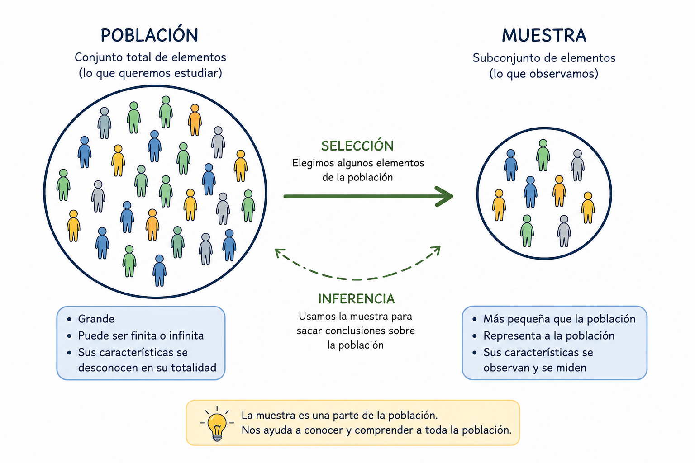
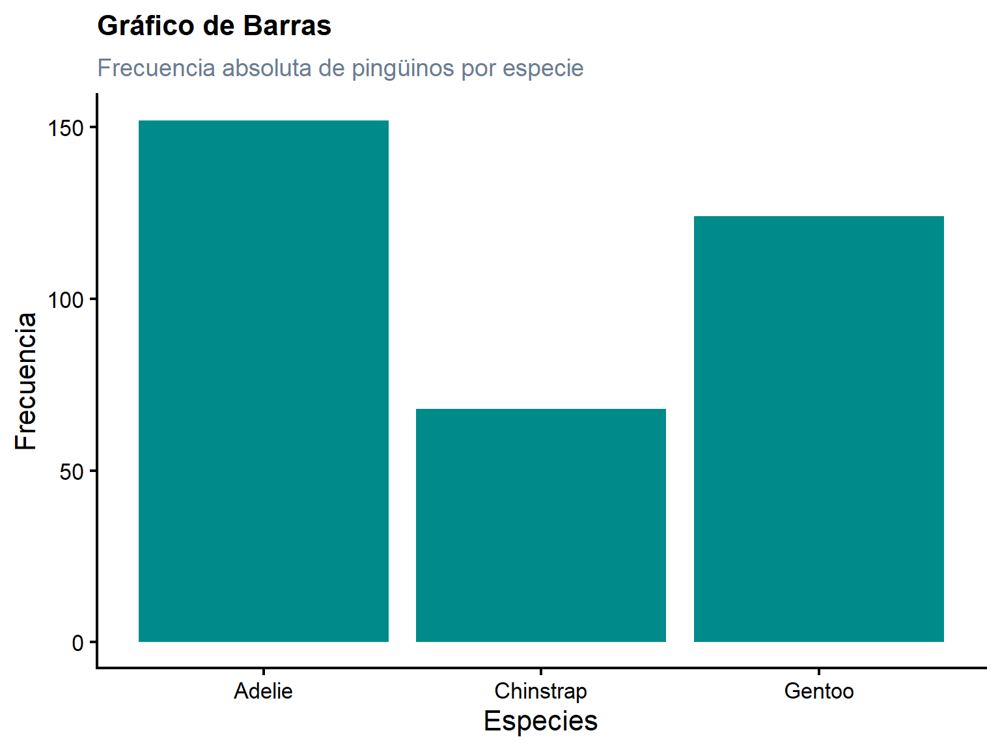
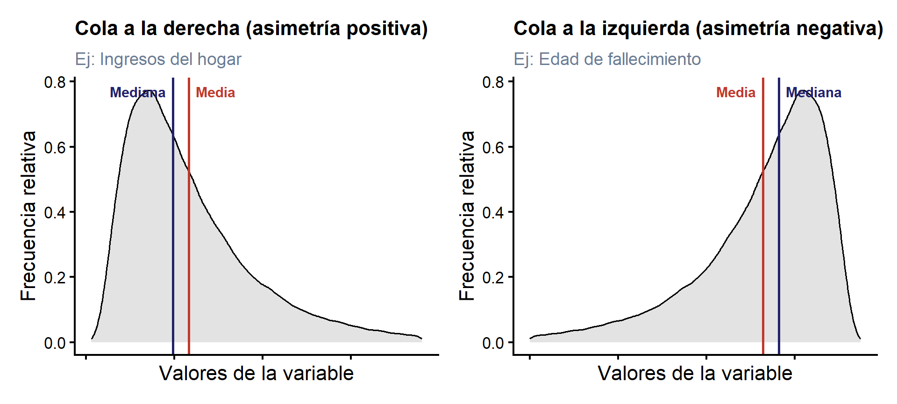
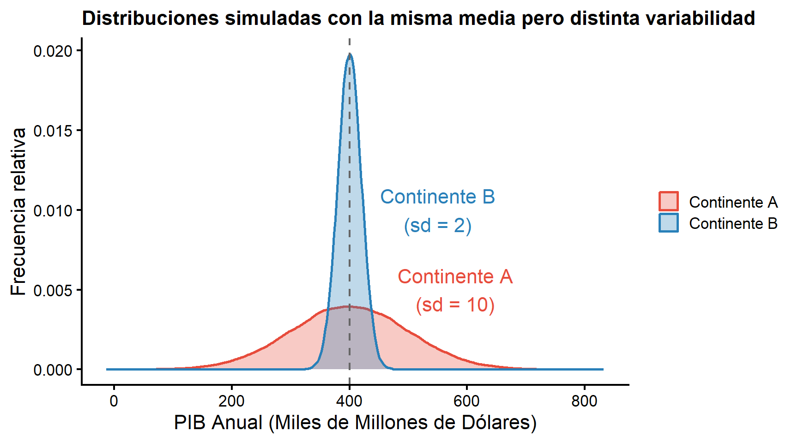
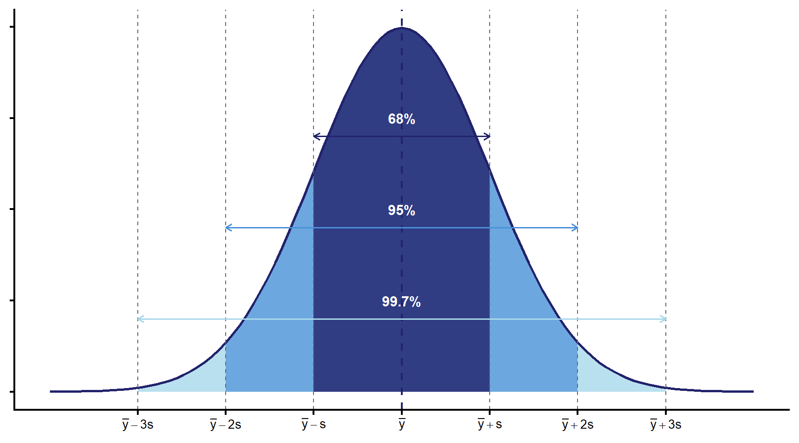
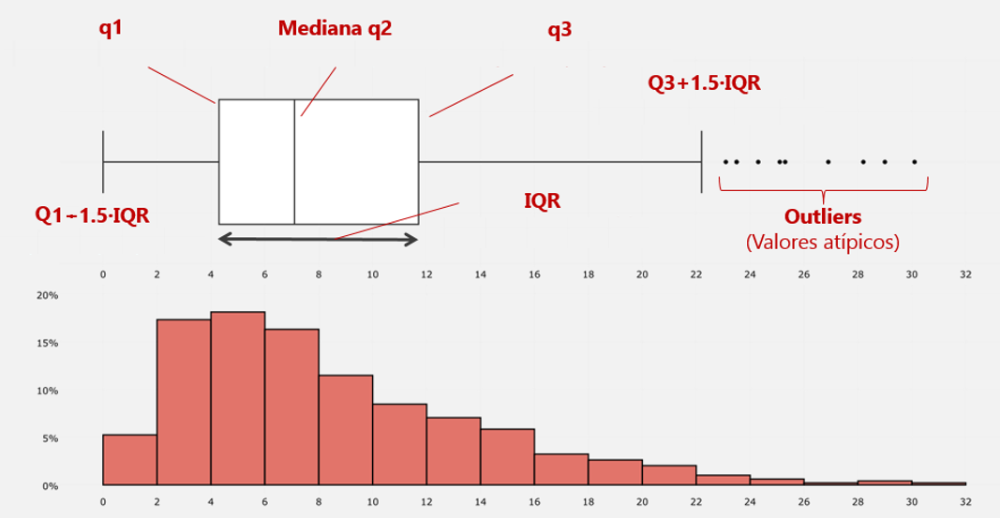
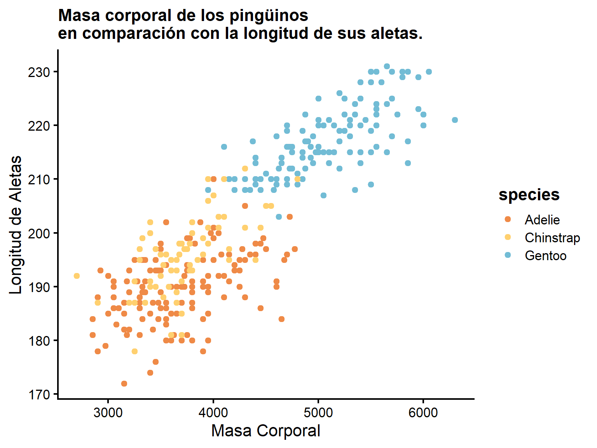

Clase 1: Estadística Descriptiva
Nivelación Estadística
Prof. Gabriel Duarte Zúñiga
Universidad Adolfo Ibáñez | DIAPP-2026
2 de junio de 2026
¡Bienvenidas y Bienvenidos!
Nivelación Estadística
El objetivo de este módulo es introducir los conceptos básicos de probabilidad y estadística mediante la ejecución de código en lenguaje
R.Al finalizar este curso, las y los estudiantes serán capaces de emplear estadísticas descriptivas para un conjunto de datos ordenados (tidy) y entender la importancia de la inferencia estadística para extraer conclusiones a partir de información muestral u observacional (no experimental).
Si bien la nivelación estadística es optativa, los contenidos abordados serán fundamentales para los temas tratados en el módulo 2 de Análisis de Datos y Estadística Computacional.
Información General de la Nivelación
-
🕐 2 clases en total con una duración de 2:30 hrs cada una:
- Clase 1: Martes 02 de junio de 18:30 a 21:00
- Clase 2: Jueves 04 de junio de 18:30 a 21:00
-
La clase se divide en diferentes secciones:
- 👨🏫 Exposición: Láminas de contenido que resumen el conocimiento principal esperado como resultado de aprendizaje, junto con código de ejemplo.
- 🧠 Preguntas: A lo largo de la clase se realizarán preguntas que pueden ir contestando en línea para evaluar el aprendizaje de cada sección.
- 💻 Ejercicio guiado: Ejercicio práctico resuelto de manera simultánea por el profesor junto con los alumnos.
- 🔒 Cierre: Resumen de los aspectos más relevantes y espacio final de preguntas.
📝 Cada sesión cuenta con una guía de ejercicios para reforzar el aprendizaje de manera autónoma.
📤 La presentación y grabación se subirán a Webcursos al finalizar cada clase.
Reglas Generales
Durante las clases se debe mantener la cámara encendida. Quienes no puedan hacerlo por algún motivo deben avisar mediante correo electrónico o chat privado de zoom al ayudante.
¡Siéntanse libres de hacer consultas! De todos modos, el mayor aprendizaje se adquiere a través de la práctica: Ensayo y error.
Toda comunicación y consultas fuera de clase deben realizarse a través del foro de Webcursos: No solo se beneficiarán ustedes, sino que también sus compañeras/os!
Este módulo no tiene evaluaciones.
🎯 Objetivos Clase 1
Los objetivos específicos de la clase 1 son:
- Comprender qué es la estadística y cuál es su relevancia para los cientistas sociales.
- Distinguir los objetivos de las dos ramas principales de la estadística y cómo se utilizan en ciencias sociales para procesar y analizar información.
- Aplicar mediante lenguaje
Restadísticas descriptivas para diversos conjuntos de datos.
Introducción a la Estadística
Definiciones de Estadística
En términos generales, la estadística se define como una disciplina que, basada en determinadas metodologías y conceptos, consiste en producir, analizar, procesar, interpretar y presentar un conjunto de datos.
Así, la definición que usaremos a lo largo de la nivelación y del módulo 2 del DIAPP será la siguiente:
Estadística (Agresti 2018)
La estadística consiste en un conjunto de métodos para obtener y analizar datos.
¿Qué Son Los Datos?
- La recopilación de información está en el centro de todo conocimiento científico.
- Esta recopilación entrega observaciones, las cuales son usadas en el análisis estadístico.
- A las observaciones recolectadas sobre características de interés se les conoce como datos.
- Analizar los datos de manera correcta nos permite aprender cómo estas características recolectadas están asociadas y responder preguntas relevantes para la ciencia social, como por ejemplo:
- ¿Los trabajadores que tienen mayor educación suelen ganar más? ¿Cuánto más?
- ¿Qué variables permiten explicar de mejor manera los altos niveles violencia en ciertos territorios?
- ¿Cuál es el efecto de un programa social en la reincidencia delictual de niños, niñas y adolescentes?
Datos Ordenados o Tidy Data
A lo largo de este módulo y el siguiente, trabajaremos principalmente con datos rectangulares u ordenados (o en su defecto, haremos las transformaciones correspondientes para conseguir esta estructura). En R, a estos objetos se le conocen como dataframes (o tibbles dentro del entorno tidyverse). Algunas definiciones esenciales para entender esta estructura son las siguientes:
- Dataframe: Corresponde a una tabla de datos rectangulares (aquellos que comúnmente asociamos a una hoja de cálculo). Son la estructura de datos básica para los modelos estadísticos.
- Variables: Corresponde a las columnas de la tabla de datos y definen las características de nuestra unidad de observación. Por definición, los valores que toman las variables pueden variar entre los sujetos de una muestra o población. A la variable de interés en un estudio se le conoce como variable dependiente o outcome (\(y\)).
- Observaciones: Corresponde a las filas de una tabla de datos, en donde cada una de ellas representa un caso o unidad de análisis del conjunto de datos (una persona, un hogar, un país, etc.).
- Valores: Son los datos concretos dentro de cada celda, es decir, el valor que toma cada variable para cada observación.
Datos Ordenados o Tidy Data

💻 Datos Ordenados o Tidy Data
Con la función
head()es posible mostrar las primeras 6 observaciones de un dataframe (u otro objeto) enR.Para ejemplificar, veamos un caso concreto con información almacenada dentro del paquete gapminder (Bryan 2025) en
R. Este dataset proporciona información sobre indicadores económicos y demográficos de 142 países cada cinco años entre 1952 y 2007:
Datos Ordenados o Tidy Data
¿Cuál sería una definición apropiada de una observación para este dataset?
¿Para Qué Sirve la Estadística?
En este sentido, la estadística provee métodos para:
-
Diseñar: Planear como obtener datos para un estudio de investigación, de manera que sean informativos.
- Ejemplo: Cómo seleccionar a la gente para una encuesta y cómo diseñar sus preguntas.
-
Describir: Resumir y entender los datos obtenidos de manera simple y sin distorsionar ni perder información relevante.
- Ejemplo: Presentar estadísticas descriptivas o gráficos de barra con el objetivo de mostrar los datos de manera simple y entendible, sin distorsionar o perder mucha información.
-
Inferir: Para hacer predicciones basadas en los datos, manejando la incertidumbre de una estimación de manera objetiva.
- Ejemplo: Estimar los rangos en que oscila el efecto de un programa de manera confiable.
Población y Muestra
Gran parte de la estadística se basa en cómo extraer conclusiones a partir de un conjunto parcial de datos sobre una población de estudio. Es relevante entender que la población no solamente puede estar conformada por personas, sino también por hogares, unidades territoriales, etc.
Población y Muestra (Agresti 2018)
La población es el conjunto total de sujetos de interés en un estudio. Una muestra, es un subconjunto de la población sobre la cual se recolectan datos.

Estadística Descriptiva e Inferencial
Las principales formas de analizar datos son la estadística descriptiva y la estadística inferencial, las cuales conforman las principales dos ramas de esta ciencia.
Estadística Descriptiva (Agresti 2018)
La estadística descriptiva resume información en un conjunto de datos mediante gráficos, tablas y números como promedios y porcentajes.
Estadística Inferencial (Agresti 2018)
La estadística inferencial entrega predicciones respecto a la población a partir de una muestra de datos.
Un estadístico descriptivo corresponde a una medida numérica de resumen de una muestra de datos, mientras que una medida resumen de la población se conoce como parámetro.
Parámetro (Agresti 2018)
Un parámetro es un resumen numérico de la población.
Estadística Descriptiva: Ingresos en Chile
Dos conceptos fundamentales en el campo de la estadística son la incertidumbre y la variación. En este sentido, la estadística y la probabilidad se basan en métodos tanto para describir y modelar esta variabilidad, así como para tomar decisiones en presencia de ella.
Estadística Inferencial: Evaluación de Programas
🧠 Pregunta N° 1
La Encuesta CEP N°95 (septiembre-octubre 2025) preguntó a 1.217 personas en 100 comunas de Chile cuáles son los 3 problemas a los que debería dedicar el mayor esfuerzo el gobierno. El 61% mencionó la delincuencia, asaltos y robos en primer lugar.
¿Qué tipo de estadística representa este 61%?
- Estadística descriptiva para una muestra.
- Estadística inferencial sobre la población chilena.
- Un parámetro poblacional.
- Estadística descriptiva para la población chilena.
Variables y su Clasificación
Como vimos anteriormente, diferentes sujetos o unidades de análisis pueden tener diferentes valores para una variable. Por ejemplo, en una muestra, para la variable sexo podemos tener tanto hombres como mujeres.
Los valores que puede tomar una variable define su escala de medición (measurement scale). Los métodos estadísticos válidos para una variable dependen de esta definición.
La primera clasificación para las escalas de medición de las variables es distinguir si son números o categorías. En segundo lugar, se debe reconocer el número de niveles que hay dentro de cada una de ellas.
Variables y su Clasificación
-
Numéricos: Variables cuya escala de medición tiene valores numéricos que representan diferentes magnitudes. Pueden clasificarse en:
- Continuos: Datos que pueden tomar cualquier valor en un intervalo, es decir, pueden tomar infinitos valores posibles dentro de los números reales. Ejemplo de variables continuas son la altura, el peso o el tiempo entre dos ciudades.
- Discretos: Datos que sus posibles valores forman un conjunto de números separados, tales como los recuentos (0, 1, 2, 3, …). Un ejemplo de variables discretas es el número de hermanos.
-
Categóricos: Variables que solo pueden tomar valores específicos sobre un set de posibles categorías. Pueden clasificarse en:
-
Nominales: Categorías que no se pueden ordenar, es decir, que ninguna categoría es mayor ni menor que ninguna otra categoría. Por ejemplo: Blanco, Verde y Rojo.
- Binarios: Un caso especial de datos categóricos con solo 2 categorías de valores, por ejemplo: hombre/mujer, 0/1, verdadero/falso, presente/ausente, etc.
- Ordinales: Datos categóricos que tienen un orden explícito. A diferencia de las cuantitativas, hay un orden pero no un valor numérico que permite medir cuánta es la distancia entre cada categoría. Ej: primer, segundo y tercer lugar; clase alta, media o baja; siempre, ocasionalmente o nunca; etc.
-
Nominales: Categorías que no se pueden ordenar, es decir, que ninguna categoría es mayor ni menor que ninguna otra categoría. Por ejemplo: Blanco, Verde y Rojo.
Variables y su Clasificación
Importante
Hay casos en los que una variable numérica puede ser tratada como continua o discreta, lo cual depende del criterio del investigador, de la naturaleza del dato y de la pregunta de investigación. Esta definición, puede tener implicancias en el método o técnica cuantitativa que se utilice para analizar los datos.
Tipos de Datos
flowchart TD A[Variables] --> B[Cuantitativas o Numéricas] A --> C[Cualitativas o Categóricas] B --> D[Discretas] B --> E[Continuas] C --> F[Ordinales] C --> G[Nominales] style A fill:#adb5bd style B fill:#e9ecef style C fill:#e9ecef
En R las variables de un conjunto de datos o dataframe poseen clases que permiten asociar la tipificación anterior:
| Clase | Significado | Tipo de Variable Asociada |
|---|---|---|
int |
integer o números enteros (sin decimales) | Cuantitativa / Discreta o Continua |
num |
numeric o números reales (aquellos que pueden tener decimales) | Cuantitativa / Continua |
factor |
factor o variables categóricas con niveles (valores únicos) | Cualitativa / Ordinal o Nominal |
💻 Ejemplo en R
Con la función str() es posible identificar clase de cada variable que R reconoce para un conjunto de datos:
Ejemplo en R
Otra forma más elegante de obtener esta información es con la función glimpse() del paquete dplyr:
Rows: 1,704
Columns: 6
$ country <fct> "Afghanistan", "Afghanistan", "Afghanistan", "Afghanistan", …
$ continent <fct> Asia, Asia, Asia, Asia, Asia, Asia, Asia, Asia, Asia, Asia, …
$ year <int> 1952, 1957, 1962, 1967, 1972, 1977, 1982, 1987, 1992, 1997, …
$ lifeExp <dbl> 28.801, 30.332, 31.997, 34.020, 36.088, 38.438, 39.854, 40.8…
$ pop <int> 8425333, 9240934, 10267083, 11537966, 13079460, 14880372, 12…
$ gdpPercap <dbl> 779.4453, 820.8530, 853.1007, 836.1971, 739.9811, 786.1134, …Del resultado anterior vemos que:
-
country es una variable tipo
factor. -
continent es una variable tipo
factor. -
year es una variable tipo
int. -
lifeExp es una variable tipo
num. -
pop es una variable tipo
int. -
gdpPercap es una variable tipo
num.
Resumen
Conceptos Importantes (Agresti 2018)
- El campo de la estadística guarda relación con la recopilación, análisis y uso de datos para tomar decisiones y resolver problemas.
- Las 2 ramas principales de la estadística son la descriptiva y la inferencial.
- La estadística descriptiva consiste en métodos para organizar y resumir datos.
- La estadística inferencial consiste en métodos para obtener conclusiones o predicciones objetivas a partir de una muestra de datos.
- Los datos corresponden a observaciones que se recolectan sobre características de interés. Los datos que usaremos en este curso corresponden a datos ordenados o rectangulares en donde cada fila es una observación de la unidad de análisis, cada columna una variable o característica de interés y cada celda es un valor específico para una observación y una característica determinada.
- Los métodos estadísticos analizan datos de variables (características que varían entre sujetos o unidades de observación) y pueden definirse como cuantitativas (variables que son medidas en un intervalo) o cualitativas (variables que toman un valor específico dentro de un conjunto de categorías).
- Las variables cuantitativas pueden clasificarse en dos: Discretas (cuyos valores posibles son finitos) y continuas (cuyos valores posibles son infinitos dentro un rango determinado). Las variables cualitativas por su parte, pueden ser nominales (categorías sin orden) y ordinales (categorías con un orden definido que indica mayor o menor medida de algo sin especificar cuánto).
🧠 Pregunta N°2: Tipos de Variables (1/3)
La encuesta CEP pregunta: ¿Cuál es su nivel educacional? con las opciones: Sin estudios, Básica, Media, Técnica, Universitaria.
¿Qué tipo de variable es?
- Nominal
- Ordinal
- Cuantitativa
🧠 Pregunta N°2: Tipos de Variables (2/3)
La encuesta CEP pregunta: ¿Cuántos años tiene usted?
¿Qué tipo de variable es?
- Nominal
- Ordinal
- Cuantitativa
🧠 Pregunta N°2: Tipos de Variables (3/3)
La encuesta CEP pregunta: ¿Con qué partido político se identifica? con opciones: UDI, RN, PDG, PPD, PS, PC, Ninguno, Otro.
¿Qué tipo de variable es?
- Nominal
- Ordinal
- Cuantitativa
Estadística Descriptiva
Estadística Descriptiva
- El objetivo de la estadística descriptiva es resumir datos para facilitar su comprensión y puede usarse tanto para datos cuantitativos como cualitativos.
- Para variables cualitativas, generalmente se utilizan las frecuencias absolutas y relativas de cada categoría.
- Para las variables cuantitativas el espectro de medidas es más amplio, pudiendo distinguir cuatro grandes tipos:
- Medidas de tendencia central (🎯): Media, Mediana y Moda.
- Medidas de variabilidad (📊): Varianza y Desviación Estándar.
- Medidas de posición (📏): Percentiles, Rango Intercuartil (IQR).
- Medidas de asociación (📈) para datos cuantitativos bivariados: Correlación.
Conocimiento Relevante (Agresti 2018)
Las estadísticas descriptivas para una variable cuantitativa poseen dos atributos principales para describirlas numéricamente: El centro o su observación típica (por ejemplo, a través de la media) y su variabilidad (por ejemplo, a través de la desviación estándar).
Distribuciones de Frecuencia
- Una de las formas más básicas de resumir información es mediante tablas y gráficos que muestren una distribución de frecuencia, ya sea de una variable cualitativa o cuantitativa.
Distribución de Frecuencia (Agresti 2018)
Una distribución de frecuencias es una lista de los posibles valores de una variable, junto con el número de observaciones para cada valor.
- Las distribuciones de frecuencia se pueden visualizar mediante gráficos de barra (barplots) para datos cualitativos y mediante histogramas (histograms) en el caso de datos cuantitativos.
Para resumir datos categóricos, una forma sencilla de hacerlo sería:
- Listar los distintos valores de cada categoría.
- Contar los casos (observaciones) que hay dentro de cada una de ellas.
- Construir un indicador de frecuencia relativa (o porcentaje) de cada categoría que permita entender rápidamente el peso de cada una sobre el total.
Ejemplo de Frecuencias de Datos Cualitativos
El dataset
penguinscontiene datos de 344 pingüinos adultos de tres especies que habitan en tres islas del archipiélago Palmer, en la Antártida, incluyendo su tamaño (longitud de las aletas, masa corporal, dimensiones del pico) y sexo.Analicemos la frecuencia absoluta y relativa de las especies y presentémosla en una tabla:
library(janitor) #para agrupar datos de manera más sencilla
library(knitr)
penguins |>
tabyl(species) |>
adorn_totals("row") |>
adorn_pct_formatting(digits = 1) |>
rename(Especie = species, Frecuencia = n, Porcentaje = percent) |>
kable()| Especie | Frecuencia | Porcentaje |
|---|---|---|
| Adelie | 152 | 44.2% |
| Chinstrap | 68 | 19.8% |
| Gentoo | 124 | 36.0% |
| Total | 344 | 100.0% |
Visualización de Datos Cualitativos
Para visualizar datos categóricos sencillos como el ejemplo anterior, un gráfico de barras es una de las soluciones más adecuadas:

Distribución de Frecuencias Cuantitativas
- Un histograma es un gráfico de distribución de frecuencia para una variable cuantitativa.
- A diferencia de los gráficos de barra, donde hay una cantidad finita de valores posibles a contabilizar, los histogramas requieren definir la cantidad de intervalos o barras (bins) con que se construirá el gráfico.
- Si se ocupan muy pocos intervalos o barras, se pierde mucha información. Si se ocupan muchos intervalos, la información se torna difícil de interpretar e incluso puede ocultar los patrones generales que se quieren mostrar.
- Una alternativa para mostrar la distribución completa de una variable es hacer gráficos de densidad (density plots)
- En
Resto se puede lograr mediantegeom_histogram()ygeom_density()
Histogramas y Gráficos de Densidad
🎯 Media (Mean)
Media (mean or average)
La media es la suma de todos los valores dividido por la cantidad de valores observados (n = cantidad total de observaciones)
\[Media(y) = \bar{y} = {\frac {1}{n}}\sum _{i=1}^{n}y_{i}={\frac {y_{1}+y_{2}+\cdots +y_{n}}{n}}\]
Supongamos que tenemos los números del 1 al 5 guardados en un vector: \(V_1 =\{1,2,3,4,5\}\)
¿Cuál sería la media de \(V_1\)?
Para resolver, bastaría con aplicar la fórmula: \(\bar{V_1} ={\frac {1+2+3+4+5}{5}} = 3\)
En R, esto se realiza con la función mean()
💻 🎯 Media: Aplicación
Calcule el promedio de víctimas de homicidio consumado mensuales del año 2025 a partir del informe elaborado por el Centro para la Prevención de Homicidios y Delitos Violentos. ¿Cuántas víctimas de homicidios hubo durante 2025? (Hint: la función sum() permite sumar los elementos de un vector)
🎯 Media y Valores Faltantes
Es importante señalar que en R, cuando se intenta calcular la media y existen valores faltantes, el resultado será siempre NA:
Para calcular la media de los valores válidos o existentes en estas situaciones, se debe utilizar el argumento na.rm = T:
🎯 Mediana
- La mediana es el número central en una lista ordenada de datos.
- Si hay un número par de valores de datos, el valor central en realidad no se encuentra en el conjunto de datos, sino que se obtiene a partir del promedio de los dos valores que dividen los datos ordenados en la mitad superior e inferior.
- La formula matemática de la mediana es la siguiente:
\[Mediana = \begin{cases} \frac{x_\frac{n}{2} + x_{\frac{n}{2}+1}}{2} \text{, si n es par} \\ x_\frac{n+1}{2}\text{, si n es impar} \end{cases} \]
🎯 Mediana
- En comparación con la media, que utiliza todas las observaciones, la mediana depende sólo de los valores en el centro de los datos ordenados.
- Si bien esto puede parecer una desventaja, dado que la media es mucho más sensible a los valores extremos, hay muchos casos en los que la mediana es una mejor métrica para describir la tendencia central de los datos.
En R la función para calcular la mediana es: median()
🎯 Mediana: Aplicación
Con N impar la mediana es justo el valor en la posición central una vez habiendo ordenado los datos de menor a mayor:
Vemos que la mediana puede mantenerse igual pese a que los valores de los extremos de la variable cambien:
🎯📏 Distribuciones Asimétricas
- Los gráficos de densidad permiten visualizar no solo la forma de una distribución, sino también cómo se relacionan sus medidas de tendencia central y posición.
- Una regla práctica: la media siempre se desplaza hacia la cola más larga (Agresti 2018).

📊 Varianza
Las medidas de tendencia central por sí solas no son suficientes para describir numéricamente los datos de una variable cuantitativa. Si bien describen un valor típico, no permiten resumir la dispersión de los datos alrededor de ese valor típico.

📊 Varianza
- La medida de variabilidad más útil se basa en las desviaciones de cada observación respecto a la media \(\bar{y}\):
\[\text{Desviación}_i = y_i - \bar{y}\]
La suma de todas las desviaciones siempre es cero: \(\sum(y_i - \bar{y}) = 0\), por lo que se usan los cuadrados de las desviaciones para obtener una medida de variabilidad de toda la variable (y no solo la desviación de cada uno de sus valores).
La varianza \(s^2\) es aproximadamente el promedio de las desviaciones al cuadrado:
\[s^2 = \frac{\sum(y_i - \bar{y})^2}{n-1} = \frac{(y_1-\bar{y})^2 + (y_2-\bar{y})^2 + \cdots + (y_n-\bar{y})^2}{n-1}\]
- En
Rse puede calcular usando la funciónvar()
📊 Desviación Estándar
- La desviación estándar \(s\) es la raíz cuadrada de la varianza:
\[s = \sqrt{\frac{\sum(y_i - \bar{y})^2}{n-1}}\]
\(s\) representa la distancia típica de una observación respecto a la media: a mayor \(s\), mayor dispersión de los datos.
En
Rse puede calcular usando la funciónsd()
📊 Desviación Estándar: Propiedades (Agresti 2018)
- La desviación estándar no puede ser negativa: \(s\geq0\).
- \(s=0\) solo cuando todas las observaciones tienen el mismo valor.
- A mayor variabilidad en torno a la media, mayor valor de \(s\).
- Se usa \(n-1\) en el denominador (en lugar de \(n\)) porque con datos de una muestra esto entrega una mejor estimación de la variabilidad real de la población.
- Si los datos cambian de escala, la desviación estándar cambia proporcionalmente. Por ejemplo, si los ingresos se expresan en miles de pesos en lugar de pesos (es decir, 50 en lugar de 50.000 por ejemplo), la desviación estándar también se divide por 1.000.
📊 Desviación Estándar: Regla Empírica
Para distribuciones con forma de campana, la desviación estándar permite ubicar las observaciones según los siguientes rangos:
| Rango | Observaciones |
|---|---|
| \(\bar{y} \pm s\) | ~68% de los datos |
| \(\bar{y} \pm 2s\) | ~95% de los datos |
| \(\bar{y} \pm 3s\) | ~99.7% de los datos |
📊 Desviación Estándar: Regla Empírica

📊 🧠 Pregunta N° 3
La nota promedio de un examen es \(\bar{y} = 4\) y su desviación estándar es \(s = 1\). Suponiendo que la distribución de notas tiene forma de campana:
¿Entre qué notas se concentra el 95% de los estudiantes?
- Entre 2 y 6.
- Entre 3 y 5.
- Entre 1 y 7.
- Entre 3,5 y 4,5.
📏 Percentiles y Cuartiles
Otra forma de describir una distribución es mediante medidas de posición. Esto nos permite identificar el punto en el cual cierto porcentaje de los datos se ubican debajo (o sobre) tal punto.
Percentiles y Cuartiles
El percentil \(p\) es el valor tal que el \(p\%\) de las observaciones cae por debajo o en ese punto, y el \((100-p)\%\) cae por encima.
Los cuartiles (\(Q_n\)) se obtienen a partir de la definición de percentil cuando se define \(p = 25\) y \(p = 75\). Los cuartiles, junto con la mediana, dividen la distribución en cuatro partes, cada una de las cuales contiene una cuarta parte de las observaciones.
| Percentil | Nombre | Interpretación |
|---|---|---|
| 25° | Cuartil inferior \(Q_1\) | 25% de los datos cae por debajo |
| 50° | Mediana \(Q_2\) | 50% de los datos cae por debajo |
| 75° | Cuartil superior \(Q_3\) | 25% de los datos cae por encima |
El Rango Intercuartil \(IQR = Q_3 - Q_1\) mide la dispersión del 50% central de los datos y es la base para la construcción del gráfico conocido como boxplot o de caja y bigotes.
📏 Percentiles: Boxplot
- El boxplot es uno de los gráficos más comunes para identificar rápidamente las medidas de posición de una variable ya que se compone de los siguientes elementos:
- La caja: Cuyo límite inferior es primer cuartil (\(Q_1\)), su línea central el segundo cuartil (mediana) y su límite superior el tercer cuartil (\(Q_3\)).
- Los bigotes: Que representan la variabilidad fuera del 50% central (\(1,5 \times IQR\)).
- Los valores atípicos: Todo aquello que está fuera de los bigotes.
Valor Atípico (Outlier) (Agresti 2018)
Una observación se considera un valor atípico (outlier) cuando cae fuera de los siguientes límites:
\[[\, Q_1 - 1{,}5 \times IQR \;,\; Q_3 + 1{,}5 \times IQR \,]\]
Este criterio es una regla práctica para la detección inicial de valores inusuales, no una sentencia definitiva. Ante un valor atípico, siempre corresponde preguntarse:
- ¿Es un error de registro o digitación?
- ¿Es un valor esperable dado el contexto?
- ¿Requiere una transformación o tratamiento especial?
📏 Percentiles: Boxplot

📏 Boxplot en R
Para hacer un boxplot en R se puede usar la función geom_boxplot(). Si se especifica una variable cuantitativa y otra cualitativa, es posible comparar distribuciones entre categorías
💻 📏 Boxplot: Aplicación
Ocupando el dataset penguins, haga un boxplot del peso de los 344 pingüinos en gramos (body_mass) por especie (species):
📏 Percentiles en R: quantile()
Más allá del boxplot, la función quantile() permite calcular cualquier percentil de una variable cuantitativa. Su sintaxis básica es:
El argumento probs permite especificar exactamente qué percentiles calcular. Por ejemplo, para obtener el percentil 10, 25, 75 y 90:
¿Cómo interpretar estos resultados?
Un resultado de 3300 en el percentil 10 significa que el 10% de los pingüinos pesa menos de 3300 gramos, mientras que el 90% restante pesa más. En términos generales: el percentil \(p\) indica que el \(p\%\) de las observaciones cae por debajo de ese valor.
💻 📏 Percentiles: Aplicación
Usando el dataset gapminder, calcule los percentiles 25, 50, 75 y 90 del PIB per cápita (gdpPercap) para el año 2007. ¿Qué puede concluir sobre la distribución del ingreso entre países?
📏 Resumen con summary()
Una forma rápida de obtener las estadísticas descriptivas más importantes de un conjunto de datos es mediante la función summary(). En una sola línea entrega el mínimo, máximo, cuartiles, media y mediana de cada variable numérica, y para variables categóricas muestra la frecuencia de cada nivel:
📏 Resumen con summary()
¿Qué nos entrega summary()?
| Estadístico | Descripción |
|---|---|
Min. |
Valor mínimo de la variable |
1st Qu. |
Percentil 25 (\(Q_1\)) |
Median |
Mediana o percentil 50 (\(Q_2\)) |
Mean |
Media aritmética |
3rd Qu. |
Percentil 75 (\(Q_3\)) |
Max. |
Valor máximo de la variable |
NA's |
Cantidad de valores faltantes (si los hay) |
Nótese que cuando la media es mayor que la mediana, la distribución suele estar sesgada hacia la derecha (con valores altos extremos), como ocurre típicamente con variables de ingreso.
📏 Puntaje Z: Medida de Posición
El puntaje \(z\) mide cuántas desviaciones estándar separan una observación de la media:
\[z_i = \frac{y_i - \bar{y}}{s} = \frac{\text{observación}_i - \text{media}}{\text{desviación estándar}}\]
- Un \(z > 0\) indica que la observación está sobre la media.
- Un \(z < 0\) indica que la observación está bajo la media.
- Un \(|z| > 3\) es una señal de valor atípico (outlier) para distribuciones con forma de campana.
💻 📏 Puntaje Z
Utilizando el dataset bdims de la librería openintro (Çetinkaya-Rundel y Hardin 2024) que contiene 507 medidas físicas de individuos activos, calcule el puntaje Z para una persona que tiene tiene una altura (hgt) de 2 metros (200 en la escala de la variable) ¿Qué puede concluir a partir de este puntaje asumiendo que la distribución de la altura tiene forma de campana?
📈 Medidas de Asociación Bivariadas
Hasta el momento, hemos revisado como resumir variables cuantitativas y cualitativas tanto numéricamente como con gráficos.
Generalmente los estudios requieren del manejo de más de una variable en simultáneo, por ejemplo, para estudiar la asociación entre ellas. En este contexto, se define una variable de respuesta o resultado (típicamente \(y\)) y una (o más) variable(s) explicativa(s) (típicamente \(x\)).
Los análisis que consideran la relación entre 2 variables se conocen como análisis bivariados. Para variables cualitativas, una forma sencilla de analizar su relación es construir tablas de contingencia.
Las tablas de contingencia muestran la frecuencia de las observaciones de forma cruzada en filas y columnas, permitiendo evaluar la dependencia o asociación entre dichas variables. En
Rse puede usartbl_cross()del paquetegtsummaryPor su parte, en el caso de 2 variables cuantitativas, un gráfico de dispersión (scatterplot) es una de las herramientas más intuitivas para analizar la relación entre ellas. En
Rse puede usargeom_point()junto conaes(x = x, y = y)para graficar un scatterplot
📈 Tablas de Contingencia
library(gtsummary)
penguins |>
tbl_cross(
row = species,
col = sex,
percent = "row", # porcentajes por fila
missing = "no", # excluye NA
label = list(species ~ "Especie", sex ~ "Sexo")
) |>
modify_caption("**Distribución de pingüinos por especie y sexo**") |>
bold_labels()
Sexo
|
Total | ||
|---|---|---|---|
| female | male | ||
| Especie | |||
| Adelie | 73 (50%) | 73 (50%) | 146 (100%) |
| Chinstrap | 34 (50%) | 34 (50%) | 68 (100%) |
| Gentoo | 58 (49%) | 61 (51%) | 119 (100%) |
| Total | 165 (50%) | 168 (50%) | 333 (100%) |
📈 Gráficos de Dispersión

📈 Correlación
- Se dice que las variables \(X\) e \(Y\) (cada una con datos cuantitativos) están correlacionadas positivamente si cuando aumenta \(X\), \(Y\) también lo hace, y viceversa.
- Si cuando \(X\) aumenta \(Y\) disminuye, y viceversa, las variables están correlacionadas negativamente.
- Es importante notar que la correlación es una medida de dependencia lineal entre dos variables cuantitativas. Esto quiere decir, que puede ocurrir que 2 variables estén relacionadas de manera no lineal y, por lo tanto, exista una baja o nula correlación de Pearson, lo que no implica que no haya asociación entre estas variables.
- Para calcular el coeficiente de correlación de Pearson, multiplicamos las desviaciones de la media de la variable 1 por las de la variable 2 y las dividimos por el producto de las desviaciones estándar respectivas:
\[r= \frac{Cov(x,y)}{{s_{x}s_{y}}} = {\frac{\sum_{i=1}^n(x_i-\bar{x})(y_i-\bar{y})}{(n-1) s_{x}s_{y}}}\]
📈 Correlación
- El valor numérico de la correlación de pearson nos indica 2 cosas: la fuerza de la correlación (valor absoluto de la correlación: \(|r|\)) y en qué dirección va la correlación (signo de la correlación: \(r <0\) o \(r>0\)).
- El coeficiente de correlación es una métrica estandarizada, por lo que siempre oscila entre –1 (correlación negativa perfecta) a +1 (correlación positiva perfecta). Un coeficiente de correlación de 0 indica que no hay correlación o asociación lineal entre las variables.
📈 Correlación
- Es importante notar que no existe una única interpretación de la fuerza de la correlación de pearson (en efecto, hay muchos rangos utilizados dependiendo de la disciplina, por ejemplo ver aquí). Sin embargo una regla práctica es la siguiente (Devore 2016):
- \(r = 0\): No existe correlación
- \(0 < |r| \leq 0.5\): Correlación Débil
- \(0.5 < |r| < 0.8\): Correlación Moderada
- \(0.8 \leq |r| < 1\): Correlación Fuerte
- \(|r| = 1\): Correlación Perfecta
📈 Matriz de Correlaciones
La matriz de correlaciones es una tabla donde las variables se muestran tanto en filas como en columnas, y los valores de las celdas son las correlaciones entre las variables.
Esta matriz es necesaria para realizar los gráficos de correlación o
corplots.El comando en R para obtener esta matriz de correlaciones es
cor()
💻 Gráfico de Dispersión (Scatterplot)
Utilizando el dataset de gapminder realice un gráfico de dispersión entre lifeExp (eje y) y gdpPercap (eje x)
💻 Gráfico de Dispersión (Scatterplot) + Recta
La función geom_smooth permite ajustar visualmente una función a la distribución de los datos. Con su argumento method = lm permite ajustar una recta que ayuda a visualizar la relación lineal entre ambas variables.
💻 Matriz de Correlaciones
Por último, la librería corrplot permite visualizar de manera más efectiva las matrices de correlación. Su función homónima corrplot() recibe como argumento una matriz de correlaciones y permite ajustar diferentes parámetros visuales. Utilizando el dataset USArrests realice un corrplot de todas sus variables.
Resumen Estadística Descriptiva
Conceptos Importantes
- La métrica básica para la tendencia central es la media, pero puede ser sensible a valores atípicos (outliers).
- Otras métricas como la mediana son menos sensibles a valores atípicos y, por lo tanto, son más robustas en presencia de ellos.
- La varianza es la medida más típica de dispersión pero tiene la desventaja de no estar en escalas interpretables. Como alternativa, la raíz cuadrada de la varianza, conocido como desviación estándar, es mejor para poder interpretar la magnitud de la variabilidad en la escala del dato.
- Los percentiles permiten conocer rápidamente qué porcentaje de las unidades de observación están bajo cierto umbral.
- La covarianza es una medida de asociación entre dos variables cuantitativas. De manera análoga a la desviación estándar, la correlación acota la escala entre -1 y 1 y permite interpretar de manera más sencilla la fuerza y sentido de esta asociación.
Cierre
Resumen: Lo esencial de la clase
Resumen Clase 1
Estadística y datos
- La estadística tiene dos ramas: la descriptiva (resume y describe datos de una muestra) y la inferencial (usa datos muestrales para hacer predicciones sobre la población).
- Los datos rectangulares organizan la información en filas (observaciones) y columnas (variables). Las variables son cuantitativas (numéricas, continuas o discretas) o cualitativas (nominales u ordinales).
Estadística descriptiva
- Para variables categóricas: frecuencias absolutas y relativas.
- Para variables numéricas, existen cuatro familias de medidas: tendencia central (media y mediana), variabilidad (desviación estándar e IQR), posición (percentiles y puntaje \(z\)) y asociación (correlación).
- La mediana es una medida de tendencia central más robusta que la media en presencia de outliers.
- La desviación estándar \(s\) describe la distancia típica de una observación respecto a la media. Para distribuciones en forma de campana, la Regla Empírica establece que el 68%, 95% y 99.7% de los datos caen dentro de 1, 2 y 3 desviaciones estándar de la media, respectivamente.
- La correlación \(r\) mide la fuerza y dirección de la asociación lineal entre dos variables cuantitativas. Siempre está entre \(-1\) y \(1\) y se visualiza con un scatterplot.
Estadístico vs. parámetro
- Un estadístico resume datos de una muestra; un parámetro resume a toda la población. La inferencia estadística usa estadísticos para estimar parámetros.
Próxima Clase
- Probabilidades
- Inferencia Estadística: Intervalos de confianza
- Inferencia Estadística: Test de significancia y p-values
Bibliografía
Agresti, Alan. 2018. Statistical methods for the social sciences. Fifth edition, global edition. Harlow: Pearson Education, Limited.
Bryan, Jennifer. 2025. «gapminder: Data from Gapminder». https://doi.org/10.32614/CRAN.package.gapminder.
Çetinkaya-Rundel, Mine, y Johanna Hardin. 2024. Introduction to modern statistics. 2e ed. Vereinigte Staaten: OpenIntro, Inc. https://openintro-ims.netlify.app/.
Devore, Jay L. 2016. Probabilidad y estadística para ingeniería y ciencias (9a. ed.). Distrito Federal: CENGAGE Learning.
Wickham, Hadley, Mine Çetinkaya-Rundel, y Garrett Grolemund. 2023. R for Data Science: Import, Tidy, Transform, Visualize, and Model Data. https://r4ds.hadley.nz/.